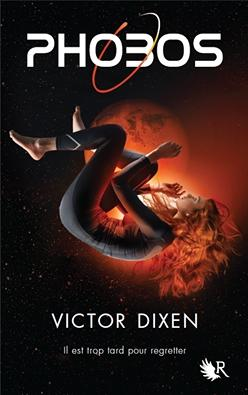
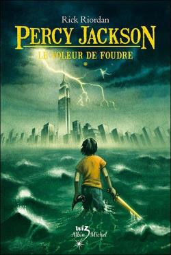
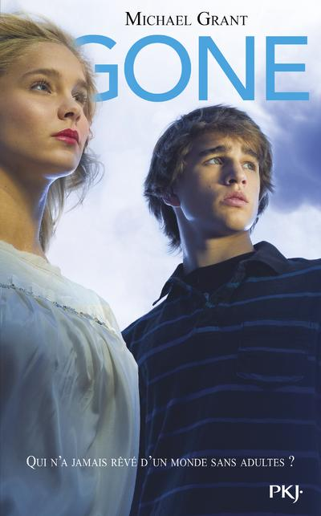
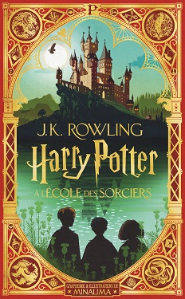
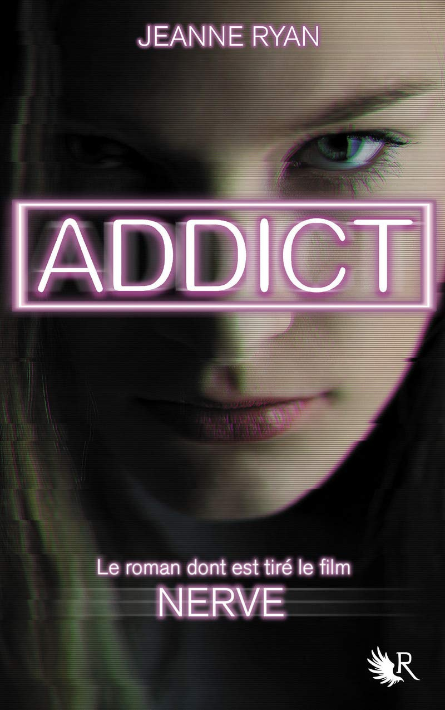
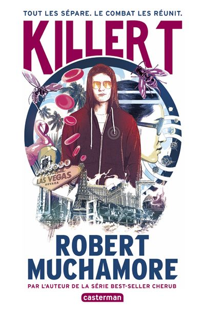

| Titre | Auteur | Catégorie | Annee | Caractéristiques | Couverture |
| 1 | Numero 4 | Pittacus Lore | SF | 2010 | 7 tomes, adapté en film (nul) |  |
| 2 | Il est grand temps de rallumer les étoiles | Virginie Grimaldie | Contemporain | 2019 | | |
| 3 | Phobos | Victor Dixen | SF Jeunesse | 2015 | 4 tomes |  |
| 4 | Percy Jackson | Rick Riordan | Fantasy Jeunesse | 2008 | 5 tomes, adapté en films |  |
| 5 | Central Park | Guillaume Musso | Contemporain | 2014 | |  |
| 6 | Gone | Micheal Grant | Fantastique Jeunesse | 2009 | 6 tomes |  |
| 7 | Harry Potter | JK Rowling | Fantastique Jeunesse | 1998 | 7 1/2 tomes, adapté en films |  |
| 8 | Forteresse digitale | Dan Brown | Thriller | 2007 | | |
| 9 | Addict | Jeanne Ryan | SF Thriller | 2016 | Adapté en film (Nerve) |  |
| 10 | Killer T | Robert Muchamore | SF Thriller | 2019 | |  |